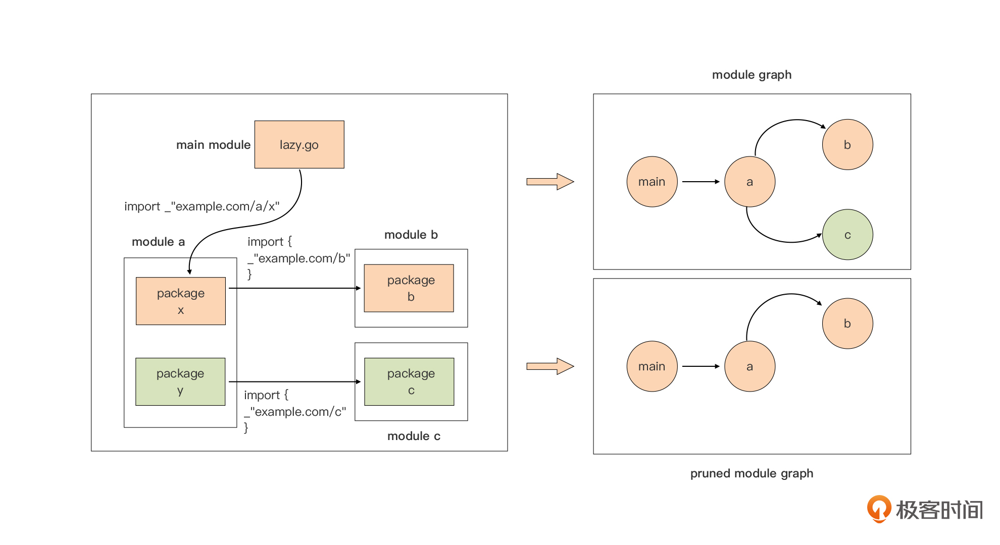
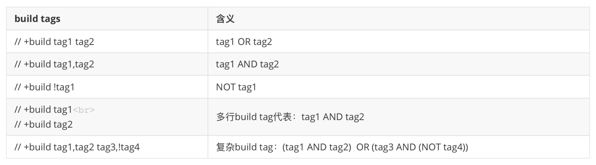

- 00 开篇词 这样入门Go，才能少走弯路.md.html
- 01 前世今生：你不得不了解的Go的历史和现状.md.html
- 02 拒绝“Hello and Bye”：Go语言的设计哲学是怎么一回事？.md.html
- 03 配好环境：选择一种最适合你的Go安装方法.md.html
- 04 初窥门径：一个Go程序的结构是怎样的？.md.html
- 05 标准先行：Go项目的布局标准是什么？.md.html
- 06 构建模式：Go是怎么解决包依赖管理问题的？.md.html
- 07 构建模式：Go Module的6类常规操作.md.html
- 08 入口函数与包初始化：搞清Go程序的执行次序.md.html
- 09 即学即练：构建一个Web服务就是这么简单.md.html
- 10 变量声明：静态语言有别于动态语言的重要特征.md.html
- 11 代码块与作用域：如何保证变量不会被遮蔽？.md.html
- 12 基本数据类型：Go原生支持的数值类型有哪些？.md.html
- 13 基本数据类型：为什么Go要原生支持字符串类型？.md.html
- 14 常量：Go在“常量”设计上的创新有哪些？.md.html
- 15 同构复合类型：从定长数组到变长切片.md.html
- 16 复合数据类型：原生map类型的实现机制是怎样的？.md.html
- 17 复合数据类型：用结构体建立对真实世界的抽象.md.html
- 18 控制结构：if的“快乐路径”原则.md.html
- 19 控制结构：Go的for循环，仅此一种.md.html
- 20 控制结构：Go中的switch语句有哪些变化？.md.html
- 21 函数：请叫我“一等公民”.md.html
- 22 函数：怎么结合多返回值进行错误处理？.md.html
- 23 函数：怎么让函数更简洁健壮？.md.html
- 24 方法：理解“方法”的本质.md.html
- 25 方法：方法集合与如何选择receiver类型？.md.html
- 26 方法：如何用类型嵌入模拟实现“继承”？.md.html
- 27 即学即练：跟踪函数调用链，理解代码更直观.md.html
- 28 接口：接口即契约.md.html
- 29 接口：为什么nil接口不等于nil？.md.html
- 30 接口：Go中最强大的魔法.md.html
- 31 并发：Go的并发方案实现方案是怎样的？.md.html
- 32 并发：聊聊Goroutine调度器的原理.md.html
- 33 并发：小channel中蕴含大智慧.md.html
- 34 并发：如何使用共享变量？.md.html
- 35 即学即练：如何实现一个轻量级线程池？.md.html
- 36 打稳根基：怎么实现一个TCP服务器？（上）.md.html
- 37 代码操练：怎么实现一个TCP服务器？（中）.md.html
- 38 成果优化：怎么实现一个TCP服务器？（下）.md.html
- 39 驯服泛型：了解类型参数.md.html
- 40 驯服泛型：定义泛型约束.md.html
- 41 驯服泛型：明确使用时机.md.html
- 元旦快乐 这是一份暂时停更的声明.md.html
- 加餐 作为Go Module的作者，你应该知道的几件事.md.html
- 加餐 如何拉取私有的Go Module？.md.html
- 加餐 我“私藏”的那些优质且权威的Go语言学习资料.md.html
- 加餐 聊聊Go 1.17版本的那些新特性.md.html
- 加餐 聊聊Go语言的指针.md.html
- 加餐 聊聊最近大热的Go泛型.md.html
- 大咖助阵 叶剑峰：Go语言中常用的那些代码优化点.md.html
- 大咖助阵 大明：Go泛型，泛了，但没有完全泛.md.html
- 大咖助阵 孔令飞：从小白到“老鸟”，我的Go语言进阶之路.md.html
- 大咖助阵 徐祥曦：从销售到分布式存储工程师，我与 Go 的故事.md.html
- 大咖助阵 曹春晖：聊聊 Go 语言的 GC 实现.md.html
- 大咖助阵 海纳：聊聊语言中的类型系统与泛型.md.html
- 期中测试 一起检验下你的学习成果吧.md.html
- 用户故事 罗杰：我的Go语言学习之路.md.html
- 结束语 和你一起迎接Go的黄金十年.md.html
- 结课测试 快来检验下你的学习成果吧！.md.html
- 捐赠
加餐 聊聊Go 1.17版本的那些新特性
你好，我是Tony Bai。
现在是2021年12月，万众期盼的潜力网红版本Go 1.18的开发已经冻结，Go核心开发团队正在紧锣密鼓地修bug。我们已经可以开始期待2022年的2月份，Go 1.18将携带包括泛型语法的大批新特性赶来。不过当下我们不能“舍近求远”，今年8月中旬Go核心团队发布的Go 1.17版本才是当下最具统治力的Go社区网红，它的影响力依旧处于巅峰。
根据我们在第3讲中提到的Go版本选择策略，我估计很多Go开发者都还没切换到Go 1.17版本，没有亲自体验过Go 1.17新特性带来的变化；还有一些Go开发者虽然已经升级到Go 1.17版本，但也仅限于对Go 1.17版本的基本使用，可能还不是很清楚Go 1.17版本中究竟有哪些新特性，以及这些新特性会带给他们哪些好处。
所以今天这讲，我们就来聊聊Go 1.17版本中的新特性，目的是让那些没用过Go 1.17版本，或者用过Go 1.17版本但还不知道它新特性变化的Go开发者，对Go 1.17有一个全面的了解。
Go 1.17版本中的新特性很多，在这里我就不一一列举了，我仅挑几个有代表性的、重要的新特性和你好好聊聊。这里会包括新的语法特性、Go Module机制变化，以及Go编译器与运行时方面的变化。
新的语法特性
在第2讲学习Go语言设计哲学时，我们知道了Go语言的设计者们在语言设计之初，就拒绝了走语言特性融合的道路，选择了“做减法”，并致力于打造一门简单的编程语言。从诞生到现在，Go语言自身语法特性变化很小，甚至可以用屈指可数来形容，因此新语法特性对于Gopher来说属于“稀缺品”。这也直接导致了每次Go新版本发布，我们都要先看看语法特性是否有变更，每个新加入语法特性都值得我们投入更多关注，去深入研究。
不出所料，Go 1.17版本在语法特性方面仅仅做了一处增强，那就是支持切片转换为数组指针。下面我们详细来看一下。
支持将切片转换为数组指针
在第15讲中，我们对Go中的切片做了系统全面的讲解。我们知道，通过数组切片化，我们可以将一个数组转换为切片。转换后，数组将成为转换后的切片的底层数组，通过切片，我们可以直接改变数组中的元素，就像下面代码这样：
a := [3]int{11, 12, 13}
b := a[:] // 通过切片化将数组a转换为切片b
b[1] += 10
fmt.Printf("%v\n", a) // [11 22 13]
但反过来就不行了。在Go 1.17版本之前，Go并不支持将切片再转换回数组类型。当然，如果你非要这么做也不是没有办法，我们可以通过unsafe包以不安全的方式实现这样的转换，如下面代码所示：
b := []int{11, 12, 13}
var p = (*[3]int)(unsafe.Pointer(&b[0]))
p[1] += 10
fmt.Printf("%v\n", b) // [11 22 13]
但是unsafe包，正如其名，它的安全性没有得到编译器和runtime层的保证，只能由开发者自己保证，所以我建议Gopher们在通常情况下不要使用。
2009年末，也就是Go语言宣布开源后不久，Roger Peppe便提出一个issue，希望Go核心团队考虑在语法层面补充从切片到数组的转换语法，同时希望这种转换以及转换后的数组在使用时的下标边界，能得到编译器和runtime的协助检查。十二年后这个issue终于被Go核心团队接受，并在Go 1.17版本加入到Go语法特性当中。
所以，在Go 1.17版本中，我们可以像下面代码这样将一个切片转换为数组类型指针，不用再借助unsafe包的“黑魔法”了：
b := []int{11, 12, 13}
p := (*[3]int)(b) // 将切片转换为数组类型指针
p[1] = p[1] + 10
fmt.Printf("%v\n", b) // [11 22 13]
不过，这里你要注意的是，Go会通过运行时而不是编译器去对这类切片到数组指针的转换代码做检查，如果发现越界行为，就会触发运行时panic。Go运行时实施检查的一条原则就是“转换后的数组长度不能大于原切片的长度”，注意这里是切片的长度（len），而不是切片的容量（cap）。于是你会看到，下面的转换有些合法，有些非法：
var b = []int{11, 12, 13}
var p = (*[4]int)(b) // cannot convert slice with length 3 to pointer to array with length 4
var p = (*[0]int)(b) // ok，*p = []
var p = (*[1]int)(b) // ok，*p = [11]
var p = (*[2]int)(b) // ok，*p = [11, 12]
var p = (*[3]int)(b) // ok，*p = [11, 12, 13]
var p = (*[3]int)(b[:1]) // cannot convert slice with length 1 to pointer to array with length 3
另外，nil切片或cap为0的empty切片都可以被转换为一个长度为0的数组指针，比如：
var b1 []int // nil切片
p1 := (*[0]int)(b1)
var b2 = []int{} // empty切片
p2 := (*[0]int)(b2)
说完了Go语法特性的变化后，我们再来看看Go Module构建模式在Go 1.17中的演进。
Go Module构建模式的变化
自从Go 1.11版本引入Go Module构建模式以来，每个Go大版本发布时，Go Module都会有不少的积极变化，Go 1.17版本也不例外。
修剪的module依赖图
Go 1.17版本中，Go Module最重要的一个变化就是pruned module graph，即修剪的module依赖图。要理解这个概念，我们先来讲什么是完整module依赖图。
在Go 1.17之前的版本中，某个module的依赖图是由这个module的直接依赖以及所有间接依赖组成的。这样，无论某个间接依赖是否真正为原module的构建做出贡献，Go命令在解决依赖时都会读取每个依赖的go.mod，包括那些没有被真正使用到的module，这样形成的module依赖图被称为完整module依赖图（complete module graph）。
从Go 1.17的版本开始，Go不再使用“完整module依赖图”，而是引入了pruned module graph，也就是修剪的module依赖图。修剪的module依赖图就是在完整module依赖图的基础上，将那些对构建完全没有“贡献”的间接依赖module修剪掉后，剩余的依赖图。使用修剪后的module依赖图进行构建，有助于避免下载或阅读那些不必要的go.mod文件，这样Go命令可以不去获取那些不相关的依赖关系，从而在日常开发中节省时间。
这么说还是比较抽象，我们用下图中的例子来详细解释一下module依赖图修剪的原理。

上图中的例子来自于Go 1.17源码中的src/cmd/go/testdata/script/mod_lazy_new_import.txt，通过执行txtar工具，我们可以将这个txt转换为mod_lazy_new_import.txt中描述的示例结构，转换命令为: txtar -x < $GOROOT/src/cmd/go/testdata/script/mod_lazy_new_import.txt。
在这个示例中，main module中的lazy.go导入了module a的package x，后者则导入了module b中的package b。并且，module a还有一个package y，这个包导入了module c的package c。通过go mod graph命令，我们可以得到main module的完整module依赖图，也就是上图的右上角的那张。
现在问题来了！package y是因为自身是module a的一部分而被main module依赖的，它自己没有为main module的构建做出任何“代码级贡献”，同理，package y所依赖的module c亦是如此。但是在Go 1.17之前的版本中，如果Go编译器找不到module c，那么main module的构建也会失败，这会让开发者们觉得不够合理！
现在，我们直观地看一下在Go 1.16.5下，这个示例的go.mod是怎样的：
module example.com/lazy
go 1.15
require example.com/a v0.1.0
replace (
example.com/a v0.1.0 => ./a
example.com/b v0.1.0 => ./b
example.com/c v0.1.0 => ./c1
example.com/c v0.2.0 => ./c2
)
我们只需要关注require块中的内容就可以了，下面的replace块主要是为了示例能找到各种依赖module而设置的。
我们知道，在Go 1.16及以前支持Go Module的版本建立的Go Module中，在go.mod经过go mod tidy后，require块中保留的都是main module的直接依赖，在某些情况下，也会记录indirect依赖，这些依赖会在行尾用indirect指示符明示。但在这里，我们看不到main module的间接依赖以及它们的版本，我们可以用go mod graph来查看module依赖图：
$go mod graph
example.com/lazy example.com/[email protected]
example.com/[email protected] example.com/[email protected]
example.com/[email protected] example.com/[email protected]
这个go mod graph的输出，和我们在上面图中右上角画的module graph是一致的。此时，如果我们将replace中的第三行（example.com/c v0.1.0 => ./c1这一行）删除，也就是让Go编译器找不到module [email protected]，那么我们构建main modue时就会得到下面的错误提示：
$go build
go: example.com/[email protected] requires
example.com/[email protected]: missing go.sum entry; to add it:
go mod download example.com/c
现在我们将执行权限交给Go 1.17看看会怎样！
这个时候，我们需要对go.mod做一些修改，也就是将go.mod中的go 1.15改为go 1.17，这样Go 1.17才能起到作用。接下来，我们执行go mod tidy，让Go 1.17重新构建go.mod：
$go mod tidy
$cat go.mod
module example.com/lazy
go 1.17
require example.com/a v0.1.0
require example.com/b v0.1.0 // indirect
replace (
example.com/a v0.1.0 => ./a
example.com/b v0.1.0 => ./b
example.com/c v0.1.0 => ./c1
example.com/c v0.2.0 => ./c2
)
我们看到执行go mod tidy之后，go.mod发生了变化：增加了一个require语句块，记录了main module的间接依赖，也就是module [email protected]。
现在，我们也同样将go.mod replace块中的第三行（example.com/c v0.1.0 => ./c1这一行）删除，再来用go 1.17构建一次main module。
这一次我们没有看到Go编译器的错误提示。也就是说在构建过程中，Go编译器看到的main module依赖图中并没有module [email protected]。这是因为module c并没有为main module的构建提供“代码级贡献”，所以Go命令把它从module依赖图中剪除了。这一次，Go编译器使用的真实的依赖图是上图右下角的那张。这种将那些对构建完全没有“贡献”的间接依赖module从构建时使用的依赖图中修剪掉的过程，就被称为module依赖图修剪（pruned module graph）。
但module依赖图修剪也带来了一个副作用，那就是go.mod文件size的变大。因为从Go 1.17版本开始，每次调用go mod tidy，Go命令都会对main module的依赖做一次深度扫描（deepening scan），并将main module的所有直接和间接依赖都记录在go.mod中。考虑到依赖的内容较多，go 1.17会将直接依赖和间接依赖分别放在多个不同的require块中。
所以，在Go 1.17版本中，go.mod中存储了main module的所有依赖module列表，这似乎也是Go项目第一次有了项目依赖的完整列表。不知道会不会让你想起其他主流语言构架系统中的那个lock文件呢？虽然go.mod并不是lock文件，但有了完整依赖列表，至少我们可以像其他语言的lock文件那样，知晓当前Go项目所有依赖的精确版本了。
在讲解下一个重要变化之前，我还要提一点小变化，那就是在Go 1.17版本中，go get已经不再被用来安装某个命令的可执行文件了。如果你依旧使用go get安装，Go命令会提示错误。这也是很多同学在学习我们课程的入门篇时经常会问的一个问题。
新版本中，我们需要使用go install来安装，并且使用go install安装时还要用@vx.y.z明确要安装的命令的二进制文件的版本，或者是使用@latest来安装最新版本。
除了Go语法特性与Go Module有重要变化之外，Go编译器的变化对Go程序的构建与运行影响同样十分巨大，我们接下来就来看一下Go 1.17在这方面的重要变化。
Go编译器的变化
在Go1.17版本，Go编译器的变化主要是在AMD64架构下实现了基于寄存器的调用惯例，以及新引入了//go:build形式的构建约束指示符。现在我们就来分析下这两点。
基于寄存器的调用惯例
Go 1.17版本中，Go编译器最大的变化是在AMD64架构下率先实现了从基于堆栈的调用惯例到基于寄存器的调用惯例的切换。
所谓“调用惯例（calling convention）”，是指调用方和被调用方对于函数调用的一个明确的约定，包括函数参数与返回值的传递方式、传递顺序。只有双方都遵守同样的约定，函数才能被正确地调用和执行。如果不遵守这个约定，函数将无法正确执行。
Go 1.17版本之前，Go采用基于栈的调用约定，也就是说函数的参数与返回值都通过栈来传递，这种方式的优点是实现简单，不用担心底层CPU架构寄存器的差异，适合跨平台，但缺点就是牺牲了一些性能。
我们都知道，寄存器的访问速度是要远高于内存的。所以，现在大多数平台上的大多数语言实现都使用基于寄存器的调用约定，通过寄存器而不是内存传递函数参数和返回结果，并指定一些寄存器为调用保存寄存器，允许函数在不同的调用中保持状态。Go核心团队决定在1.17版本向这些语言看齐，并在AMD64架构下率先实现基于寄存器的调用惯例。
我们可以在Go 1.17的版本发布说明文档中看到，切换到基于寄存器的调用惯例后，一组有代表性的Go包和程序的基准测试显示，Go程序的运行性能提高了约5%，二进制文件大小典型减少约2%。
那我们这里就来实测一下，看看是否真的能提升那么多。下面是一个使用多种方法进行字符串连接的benchmark测试源码：
var sl []string = []string{
"Rob Pike ",
"Robert Griesemer ",
"Ken Thompson ",
}
func concatStringByOperator(sl []string) string {
var s string
for _, v := range sl {
s += v
}
return s
}
func concatStringBySprintf(sl []string) string {
var s string
for _, v := range sl {
s = fmt.Sprintf("%s%s", s, v)
}
return s
}
func concatStringByJoin(sl []string) string {
return strings.Join(sl, "")
}
func concatStringByStringsBuilder(sl []string) string {
var b strings.Builder
for _, v := range sl {
b.WriteString(v)
}
return b.String()
}
func concatStringByStringsBuilderWithInitSize(sl []string) string {
var b strings.Builder
b.Grow(64)
for _, v := range sl {
b.WriteString(v)
}
return b.String()
}
func concatStringByBytesBuffer(sl []string) string {
var b bytes.Buffer
for _, v := range sl {
b.WriteString(v)
}
return b.String()
}
func concatStringByBytesBufferWithInitSize(sl []string) string {
buf := make([]byte, 0, 64)
b := bytes.NewBuffer(buf)
for _, v := range sl {
b.WriteString(v)
}
return b.String()
}
func BenchmarkConcatStringByOperator(b *testing.B) {
for n := 0; n < b.N; n++ {
concatStringByOperator(sl)
}
}
func BenchmarkConcatStringBySprintf(b *testing.B) {
for n := 0; n < b.N; n++ {
concatStringBySprintf(sl)
}
}
func BenchmarkConcatStringByJoin(b *testing.B) {
for n := 0; n < b.N; n++ {
concatStringByJoin(sl)
}
}
func BenchmarkConcatStringByStringsBuilder(b *testing.B) {
for n := 0; n < b.N; n++ {
concatStringByStringsBuilder(sl)
}
}
func BenchmarkConcatStringByStringsBuilderWithInitSize(b *testing.B) {
for n := 0; n < b.N; n++ {
concatStringByStringsBuilderWithInitSize(sl)
}
}
func BenchmarkConcatStringByBytesBuffer(b *testing.B) {
for n := 0; n < b.N; n++ {
concatStringByBytesBuffer(sl)
}
}
func BenchmarkConcatStringByBytesBufferWithInitSize(b *testing.B) {
for n := 0; n < b.N; n++ {
concatStringByBytesBufferWithInitSize(sl)
}
}
我们使用Go 1.16.5和Go 1.17分别运行这个Benchmark示例，结果如下：
Go 1.16.5：
$go test -bench .
goos: darwin
goarch: amd64
pkg: github.com/bigwhite/demo
cpu: Intel(R) Core(TM) i5-8257U CPU @ 1.40GHz
BenchmarkConcatStringByOperator-8 12132355 91.51 ns/op
BenchmarkConcatStringBySprintf-8 2707862 445.1 ns/op
BenchmarkConcatStringByJoin-8 24101215 50.84 ns/op
BenchmarkConcatStringByStringsBuilder-8 11104750 124.4 ns/op
BenchmarkConcatStringByStringsBuilderWithInitSize-8 24542085 48.24 ns/op
BenchmarkConcatStringByBytesBuffer-8 14425054 77.73 ns/op
BenchmarkConcatStringByBytesBufferWithInitSize-8 20863174 49.07 ns/op
PASS
ok github.com/bigwhite/demo 9.166s
Go 1.17：
$go test -bench .
goos: darwin
goarch: amd64
pkg: github.com/bigwhite/demo
cpu: Intel(R) Core(TM) i5-8257U CPU @ 1.40GHz
BenchmarkConcatStringByOperator-8 13058850 89.47 ns/op
BenchmarkConcatStringBySprintf-8 2889898 410.1 ns/op
BenchmarkConcatStringByJoin-8 25469310 47.15 ns/op
BenchmarkConcatStringByStringsBuilder-8 13064298 92.33 ns/op
BenchmarkConcatStringByStringsBuilderWithInitSize-8 29780911 41.14 ns/op
BenchmarkConcatStringByBytesBuffer-8 16900072 70.28 ns/op
BenchmarkConcatStringByBytesBufferWithInitSize-8 27310650 43.96 ns/op
PASS
ok github.com/bigwhite/demo 9.198s
我们可以看到，相对于Go 1.16.5跑出的结果，Go 1.17在每一个测试项上都有小幅的性能提升，有些性能提升甚至达到10%左右（以BenchmarkConcatStringBySprintf为例，它的性能提升为(445.1-410.1)/445.1=7.8%）。也就是说你的Go源码使用Go 1.17版本重新编译一下，就能获得大约5%的性能提升，这种新版本带来的性能的“自然提升”显然是广大Gopher乐意看到的。
我们再来看看编译后的Go二进制文件的Size变化。我们以一个自有的1w行左右代码的Go程序为例，分别用Go 1.16.5和Go 1.17进行编译，得到的结果如下：
-rwxr-xr-x 1 tonybai staff 7264432 8 13 18:31 myapp-go1.16.5*
-rwxr-xr-x 1 tonybai staff 6934352 8 13 18:32 myapp-go1.17*
我们看到，Go 1.17编译后的二进制文件大小相比Go 1.16.5版本减少了约4%，比Go官方文档发布的平均效果还要好上一些。
而且，Go 1.17发布说明也提到了：改为基于寄存器的调用惯例后，绝大多数程序不会受到影响。只有那些之前就已经违反unsafe.Pointer的使用规则的代码可能会受到影响，比如不遵守unsafe规则通过unsafe.Pointer访问函数参数，或者依赖一些像比较函数代码指针的未公开的行为。
//go:build形式的构建约束指示符
此外，Go编译器还在Go 1.17中引入了//go:build形式的构建约束指示符，以替代原先易错的// +build形式。
在Go 1.17之前，我们可以通过在源码文件头部放置// +build构建约束指示符来实现构建约束，但这种形式十分易错，并且它并不支持&&和||这样的直观的逻辑操作符，而是用逗号、空格替代，这里你可以看下原// +build形式构建约束指示符的用法及含义：

但这种与程序员直觉“有悖”的形式让Gopher们十分痛苦，于是Go 1.17回归“正规正轨”，引入了//go:build形式的构建约束指示符。一方面，这可以与源文件中的其他指示符保持形式一致，比如 //go:nosplit、//go:norace、//go:noinline、//go:generate等。
另一方面，新形式将支持&&和||逻辑操作符，这样的形式就是自解释的，这样，我们程序员就不需要再像上面那样列出一个表来解释每个指示符组合的含义了。新形式是这样的：
//go:build linux && (386 || amd64 || arm || arm64 || mips64 || mips64le || ppc64 || ppc64le)
//go:build linux && (mips64 || mips64le)
//go:build linux && (ppc64 || ppc64le)
//go:build linux && !386 && !arm
考虑到兼容性，Go命令可以识别这两种形式的构建约束指示符，但推荐Go 1.17之后都用新引入的这种形式。
另外，gofmt也可以兼容处理两种形式。它的处理原则是：如果一个源码文件只有// +build形式的指示符，gofmt会把和它等价的//go:build行加入。否则，如果一个源文件中同时存在这两种形式的指示符行，那么//+build行的信息就会被//go:build行的信息所覆盖。
除了gofmt外，go vet工具也会检测源文件中是否同时存在不同形式的、语义不一致的构建指示符，比如针对下面这段代码：
//go:build linux && !386 && !arm
// +build linux
package main
import "fmt"
func main() {
fmt.Println("hello, world")
}
go vet会提示如下问题：
./buildtag.go:2:1: +build lines do not match //go:build condition
小结
Go 1.17版本的一些重要新特性就介绍到这里了，除了上面这些重要变化之外，Go 1.17还有很多变更与改进，如果你还意犹未尽，建议你去认真读读Go 1.17的发布说明文档。
另外我还要多说一句，Go 1.17版本的这些变更都是在Go1兼容性的承诺范围内的。也就是说，Go 1.17版本秉持了Go语言开源以来各个版本的一贯原则：向后兼容，也就是即使你使用Go 1.17版本，也可以成功编译你十年前写下的Go代码。
读到这里，你是不是有一种要尽快切换到Go 1.17版本的冲动呢！赶快去Go官网下载Go 1.17的最新补丁版本，开启你的Go1.17体验之旅吧。
思考题
在你阅读完Go 1.17的发布说明文档之后，你会发现Go 1.17版本中的变化有很多，除了上面几个重要特性变化外，最让你受益或印象深刻的变化是哪一个呢？欢迎在留言区分享。
欢迎你把这节课分享给更多对Go 1.17版本感兴趣的朋友。我是Tony Bai，我们下节课见。
© 2019 - 2023 Liangliang Lee. Powered by gin and hexo-theme-book.